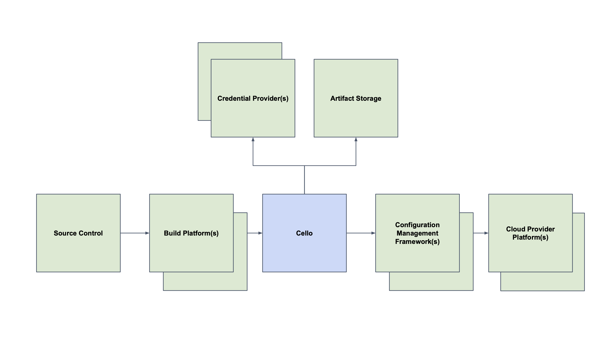

Architecture

Definitions¶
- Framework defines the cloud configuration management framework (terraform, cdk).
- Operation is an abstraction of the type of command to execute. Supports sync and diff.
- Code Archive is a zip file which contains the framework code for the operation.
- Projects define a logical grouping of targets.
- Targets are cloud providers (AWS account, etc) affected by an operation.
- Workflow Template template of steps to be taken when running a frameowrk command (diff or sync).
- Workflows execution of workflow template.
- Arguments are passed to the operation. Can be supplied for init and / or execute.
- Parameters are passed as inputs to the workflow template.
- Environment Variables are set in the shell before the operation. These will vary based on the workflow.
- Images are docker images executed by the workflow.
- Credentials Provider generates short lived credential tokens exchanged for cloud credentials.
- Token are used to provide access (multiple types exist, see below for details).
Access and Tokens¶
All access is via secrets known as a token.
There are multiple types of tokens which can be used by Cello.
-
Admin Token Provides access to manage projects and targets (admin tokens do not have the ability to perform operational commands). The admin token has the format PROVIDER:admin:SECRET. The admin token is set as an environment variable which is read by the service at startup. The admin token is passed in the Authorization header to the service.
-
User Tokens Grants access to operational commands (sync, diff, etc) for a given project. User tokens do not have the ability to manage the associated project or targets. User tokens have the format PROVIDER:USER:SECRET. User tokens are passed in the Authorization header to the service.
-
Credential Tokens Are used to obtain target credentials. Credential tokens are short lived and limited use tokens. They are generated and passed to the workflow during an operation. The token is then exchanged (via the credential provider) for target credentials (AWS credentials, etc). Credential tokens have a format based on the provider and should be considered opaque (for example vault s.ABCDEFGHIJKLMNOPQRSTUVWXYZ). Credentials tokens are passed from the credential provider to the service and then on to the workflow.
State¶
All state is stored in the credential provider (Vault) and Argo Workflows.
Operations¶
Operations are converted to the equivalent command in the target framework.
-
Terraform
-
Sync: init, apply
-
Diff: init, plan
-
CDK
- Sync: deploy
- Diff: diff
Additionally you can define your own frameworks in cello.yaml.
Workflow¶
Cello uses Argo Workflows as its workflow engine. To execute the provided command, an Argo workflow is submitted by the service. Ordinary users should not need to access Argo workflows directly. Workflows are stored as Argo Workflow Templates. Currently there is one generic workflow for all commands which performs one step which executes the image provided with the command, arguments and environment variables.
Config¶
The config file contains the commands executed by different frameworks. The example config in cello.yaml contains the default commands to run cdk and terraform.